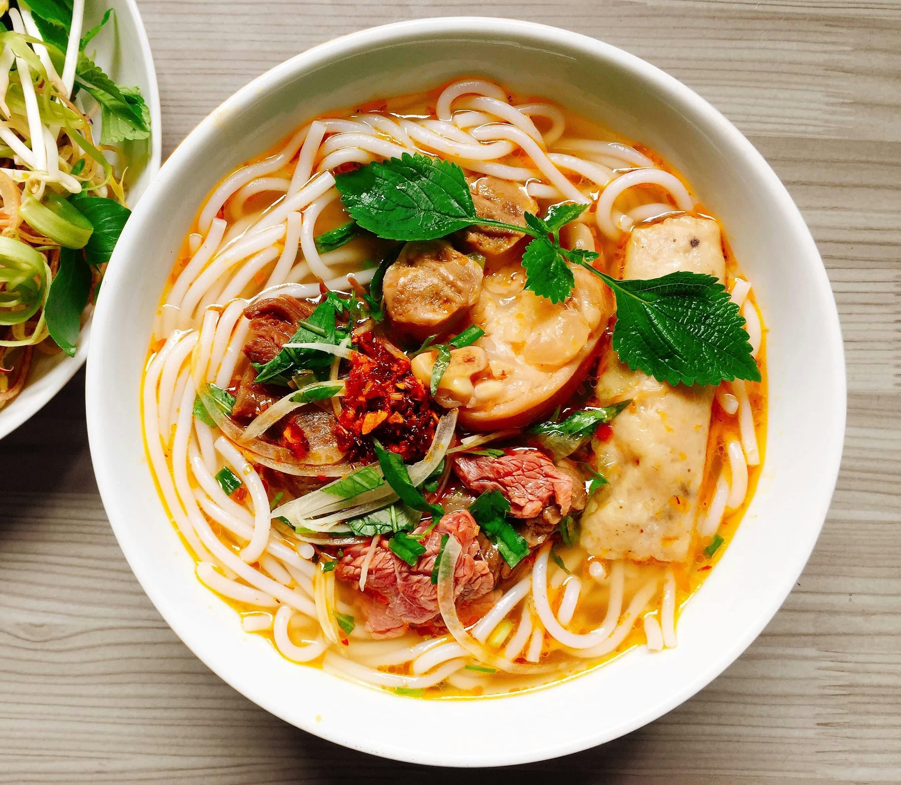

Home
Ramen Noodles 🍜

A warm, flavorful, and comforting noodle soup made with broth, noodles, vegetables, and a soft-boiled egg.
Recipe Description
Ramen noodles are a popular Japanese-inspired dish, known for their rich broth, chewy noodles and tasty toppings. This homemade version is quick to prepare, customizable and perfect for a filing meal.
Ingredients
- 2 packs instant noodles (without seasoning)
- 4 cups chicken or vegetable broth
- 2 garlic cloves (chopped)
- 1 small piece of ginger (chopped)
- 2 tbsp soy sauce
- 1 tbsp sesame oil (or vegetable oil)
- 1/2 cup mushrooms (sliced)
- 1/2 spinach or bok choy
- 2 eggs (soft boiled or boiled)
- Spring onions (chooped for garnish)
- Chili flakes (optional)
Steps to Cook
1. Prepare the Broth
- Heat sesame oil in pot
- Add garlic and ginger, saute for 1 minute.
- Pour in broth and soy sauce.
- Let it simmer for 5-7 minutes
Cook the Noodles